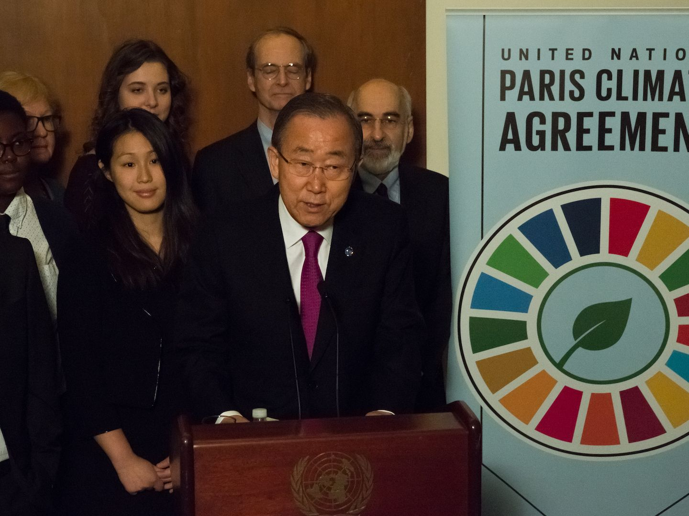
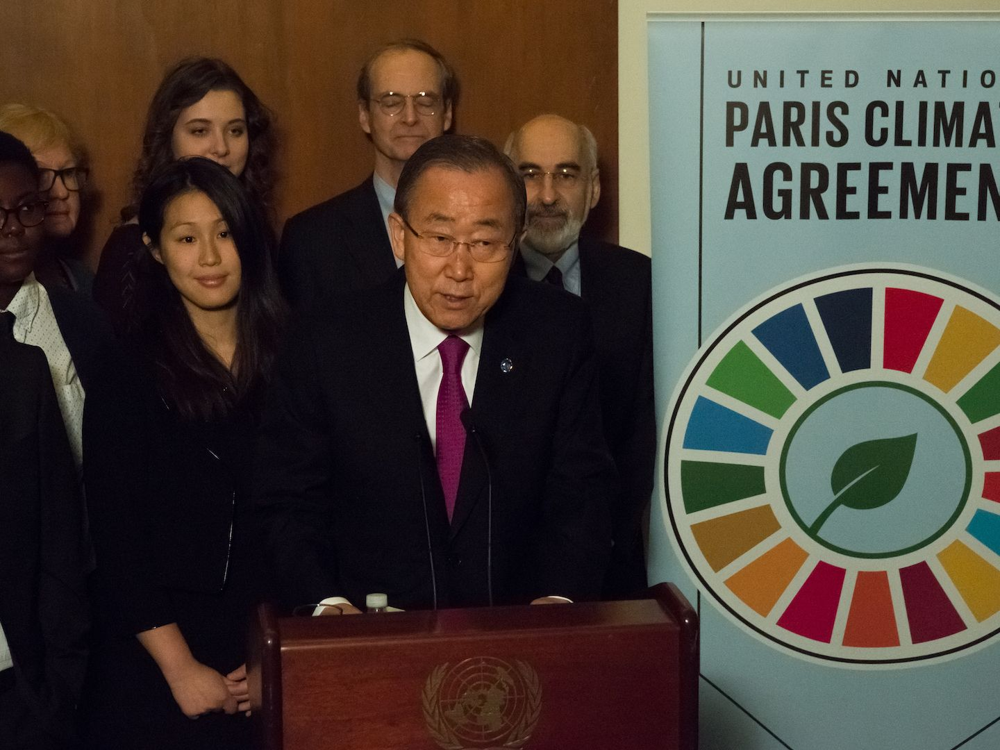

Kerjasama Multilateral
Kerjasama Multilateral adalah bentuk kerjasama yang melibatkan tiga negara atau lebih untuk mencapai tujuan bersama, biasanya melalui forum atau organisasi internasional seperti Perserikatan Bangsa-Bangsa (PBB) atau World Trade Organization (WTO). Kerjasama ini biasanya berfokus pada isu-isu global yang membutuhkan penanganan bersama dan bisa mencakup berbagai bidang, mulai dari ekonomi, sosial, hingga keamanan.
SDGs memiliki keterkaitan yang sangat kuat dengan kerja sama multilateral karena pencapaian tujuan-tujuan global tersebut tidak mungkin dilakukan oleh satu negara saja. Banyak target SDGs, seperti pengurangan kemiskinan, aksi iklim, kesehatan global, hingga pembangunan infrastruktur berkelanjutan, membutuhkan koordinasi lintas negara, pendanaan bersama, berbagi teknologi, serta penyelarasan kebijakan internasional. Melalui kerja sama multilateral baik di bawah naungan PBB maupun organisasi global lainnya.Negara-negara dapat menyepakati standar, merumuskan komitmen bersama, dan memastikan akuntabilitas dalam pelaksanaannya. SDGs 17 secara khusus menekankan pentingnya kemitraan global sebagai fondasi untuk memperkuat kolaborasi antarnegara, termasuk dukungan finansial, transfer teknologi, dan pembangunan kapasitas. Dengan demikian, kerja sama multilateral menjadi kunci utama agar SDGs dapat dicapai secara adil, merata, dan efektif di seluruh dunia.
Contoh kerjasama multilateral yang berkontribusi pada pencapaian SDGs antara lain:
1. Perserikatan Bangsa-Bangsa (PBB): Melalui berbagai agensi seperti UNICEF, WHO, dan UNDP, PBB memfasilitasi program-program yang mendukung kesehatan global (SDGs 3), pendidikan berkualitas (SDGs 4), dan pengentasan kemiskinan (SDGs 1).
2. World Trade Organization (WTO): WTO mempromosikan perdagangan internasional yang adil dan berkelanjutan, yang dapat mendukung pertumbuhan ekonomi inklusif (SDGs 8) dan pengurangan ketimpangan (SDGs 10).
3. Climate Change Agreements: Kesepakatan seperti Perjanjian Paris di bawah UNFCCC adalah contoh nyata kerja sama multilateral untuk mengatasi perubahan iklim (SDGs 13) melalui komitmen pengurangan emisi gas rumah kaca oleh negara-negara di seluruh dunia.
4. Global Fund to Fight AIDS, Tuberculosis and Malaria: Inisiatif ini mengumpulkan dana dari berbagai negara untuk memerangi penyakit menular, mendukung kesehatan global (SDGs 3), dan memperkuat sistem kesehatan di negara-negara berkembang.